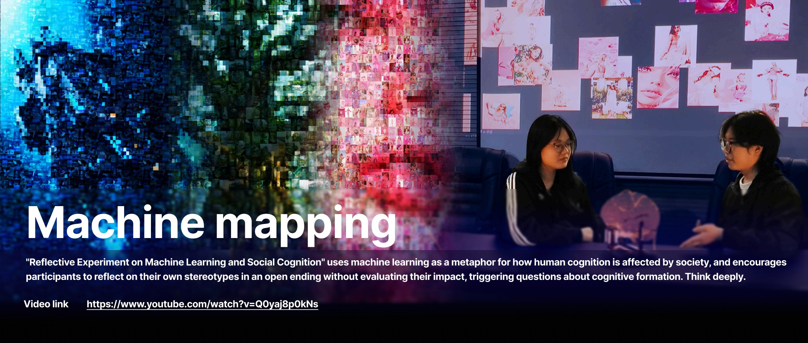
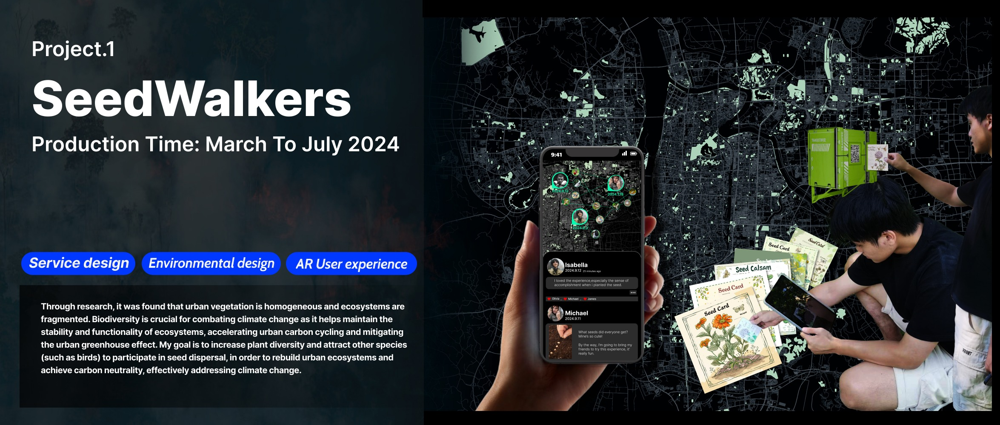

Project Hub
Work organised by role evidence.
A scannable project hub for service design, transformation design, creative technology, cultural learning and social innovation roles.
Open a case study from the evidence you need.

Multi-Species / Biodiversity Clock
A museum-and-park future experience that translates ecological rhythms into visitor noticing, reflection and action.
Capability proof: systems thinking, research translation, future prototyping, phygital service design. View Case Study
Scone Through Time
A cultural service learning prototype connecting Scottish tea culture with service innovation and inclusive hospitality.
Capability proof: research filtering, learning experience design, testing-led pivot, service innovation framing. View Case StudyIndependent 3D & AI Resource Platform
A public-facing practice across Bilibili, Xiaohongshu and a resource website for 3D, Blender and AI-assisted workflows.
Capability proof: tutorial production, public engagement, resource packaging, creator-platform operation. View Evidence Page
Ear Shield
An acoustic monitoring and public interaction concept that makes underwater noise disruption more legible.
Capability proof: ecological research, bionic concept development, physical computing, public communication. View Case Study
Machine Mapping
A participatory interaction experiment using speech, image search and visualization to question colour stereotypes.
Capability proof: critical AI framing, interaction logic, data pipeline thinking, visual prototyping. View Case Study
SeedWalkers
A city-scale AR service concept for reconnecting fragmented urban biodiversity through seed cards and public participation.
Capability proof: service blueprinting, environmental research, spatial analysis, AR service flow. View Case Study
Cross-Culture Icebreaker
A social pack and board-game system for helping Chinese international students connect through low-pressure interaction.
Capability proof: user research, persona synthesis, social design, game-based service prototyping. View Case Study